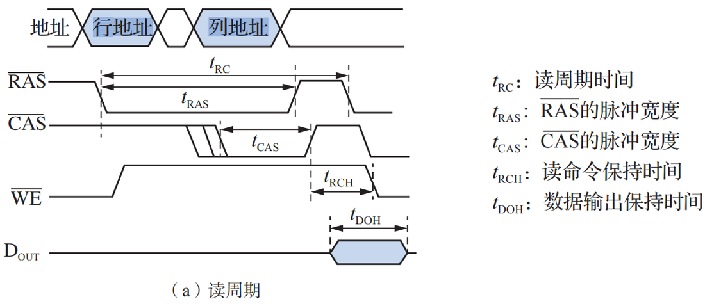
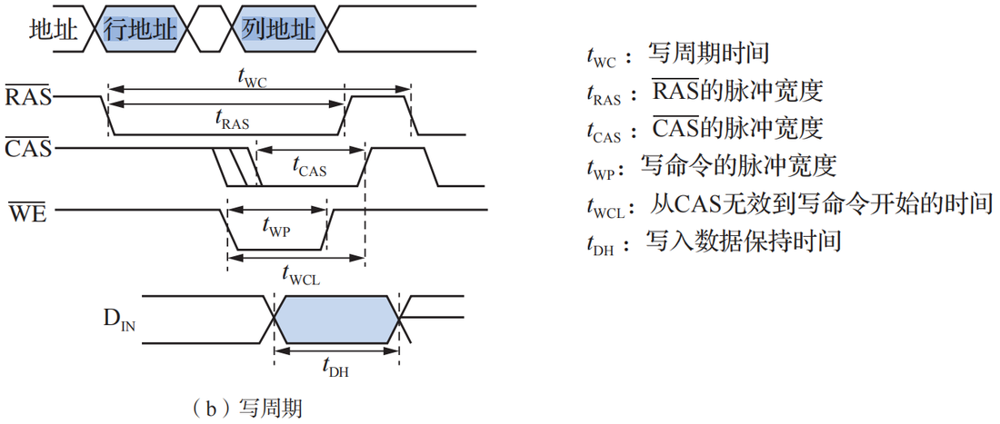
2022 年大纲调整将只读存储器 ROM 删除，新增固态硬盘 SSD， 不过 flash 存储器也属于只读存储器 ROM；
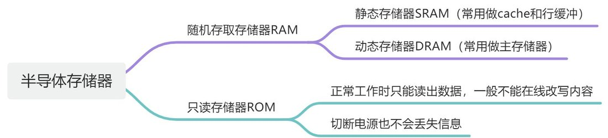
注意：“只读存储器”这个名称是历史遗留，现在多指“非易失性存储器”。除了 MROM 和一次性编程的 PROM，现代 ROM（如 EEPROM、Flash）都支持多次擦写，只是写入速度较慢或操作方式与RAM不同。同时注意是不能随意写！！而不是不能写！！!
ROM 能做到随机访问，归功于其内部的物理结构设计。ROM 的存储单元并不是排成一条直线的单行道，而是排列成一个二维矩阵（网格）。
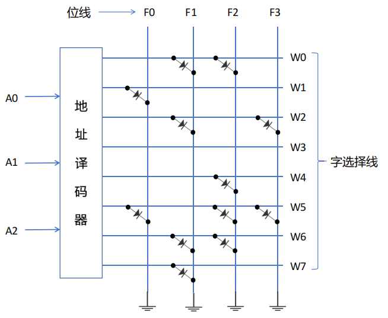
当 CPU 想要读取 ROM 中的某段数据时，整个过程是这样的：
因为这种基于坐标的硬件解码机制，定位第 1 个地址和定位第 10000 个地址所消耗的物理时间是完全一样的，这就是典型的“随机访问”。即每个单元的访问时间是一个常数，与地址无关。
ROM 的发展历程是一部“灵活性不断增加”的历史。按读写特性可划分为以下几种：
类型缩写 | 全称及中文名 | 写入/编程机制 | 擦除方式 | 特点与应用 |
MROM | Mask ROM | 厂家在制造过程中写入（固定掩膜）。 | 不可擦除 | 内容出厂即固定，不可修改。灵活性最差，但可靠性高，适合定型产品的批量生产。 |
PROM | Programmable ROM | 用户通过专用编程器写入。采用熔丝或反向二极管击穿技术。 | 不可擦除 | 只能“一次性编程”（写1后不能再变为0）。克服了MROM需厂家定制的缺点，但写错即报废。 |
EPROM | Erasable Programmable ROM | 用户通过编程器写入。采用浮置栅MOS管。 | 紫外线照射 | 可多次修改。但擦除时不灵活，必须一次性擦除芯片上的所有信息。 |
EEPROM | Electrically Erasable Programmable ROM | 加电写入。 | 电擦除 | 修改极为灵活，可以精准删除/重写个别字（字节），无需全部抹除。写操作时间比读操作长得多。 |
Flash Memory | Flash Memory | 在线擦除和重写（写命令到命令寄存器）。 | 电擦除 | 结合了EEPROM的非易失性和RAM的读写特性。读写速度快，通常以“块（Block）”为基本单位进行擦除（不过写的速度远小于读的速度）。 常见于BIOS、U盘。 |
SSD | Solid State Drive | 基于闪存芯片阵列制作。 | 电擦除 | 可修改、速度快、直接读取。广义上属于ROM，但已经没有“只读”的限制，相当于硬盘。 |
闪存 flash 和固态硬盘 SSD 均属于广义上的 ROM，但又没有保留 ROM 只读的特性。
FLASH存储器
Flash存储也称为闪存，是高密度非易失性读写存储器，它兼有RAM和ROM的优点, 而且功耗低、集成度高，不需后备电源。这种器件沿用了EPROM的简单结果和浮栅/热电子注入的编程写入方式，又兼备了E2PROM的可擦除特点，可在计算机内进行擦除和编程写入，因此又称为快擦型电可擦除重编程ROM。目前被广泛使用的U盘和存储卡等都属于Flash存储器，也用于存放BIOS。
Flash具有整片擦除和高速编程的特点，需要注意的是Flash存储器的读操作速度与写操作速度相差很大，其读取速度与半导体RAM相当，而写数据(需要先整片擦除再写入)的速度则与硬磁盘存储器相当。
闪存的工作方式有读工作方式、编程工作方式、擦除工作方式和功耗下降方式。它的编程和擦除方式采用写命令到命令寄存器的方法来管理编程和擦除。闪存芯片主要应用于微机主板上的 BIOS 和移动存储器中。常见的 U 盘、SSD 均采用这种存储单元。
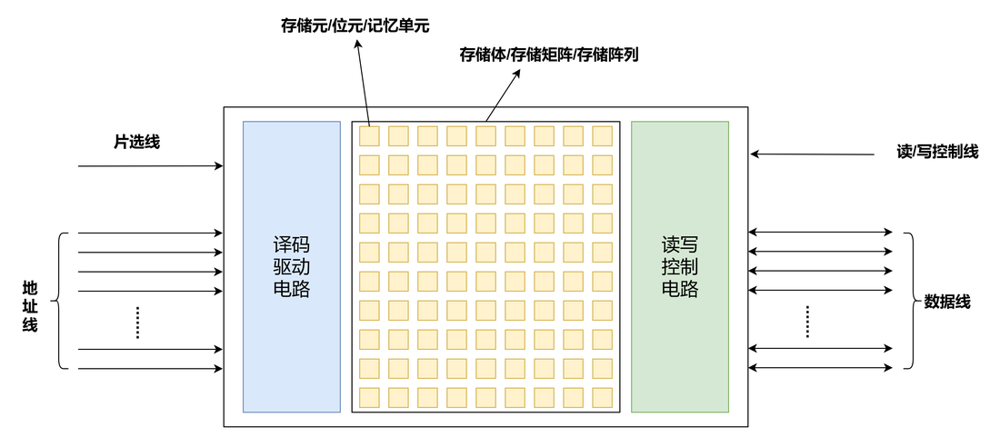
如图所示，一个半导体存储器的基本结构包括存储矩阵、译码驱动电路、和读写控制电路，此外半导体存储器还与地址线、数据线、片选线和读写控制线相连接。
先介绍一下译码器
通常，若译码器的输人端有位，则其输出端有 位。假定输入端分别为
位。假定输入端分别为 输出端分别为。如果将输入的n位看成一个二进制数，则n位输入的可能取值 为0，1，2，…，，
输出端分别为。如果将输入的n位看成一个二进制数，则n位输入的可能取值 为0，1，2，…，， 。若输入对应的二进制值为
。若输入对应的二进制值为  ，则输出端中只有 为1，其他输出端全为0。 如，当n=3时，有3个输入端
，则输出端中只有 为1，其他输出端全为0。 如，当n=3时，有3个输入端 ，8个输出端
，8个输出端 ，对应的译码器称为3- 8译码器，其符号和真值表如图所示。
，对应的译码器称为3- 8译码器，其符号和真值表如图所示。

译码器可以用来对地址码进行译码，例如，在主存储器组织中有地址译码器，它能对地址寄存器传送过来的地址进行译码，输出信号用来驱动地址码对应的地址选对所在主存单元进行读写。
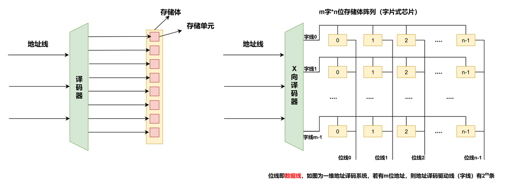
图示即为典型的单译码结构，左图中，假设存储体中包含 8 个存储单元，每个存储单元只存储一个二进制位，那么一个 3-8 译码器就能完成这 8 个存储单元的寻址，对应地址线只需要 3 根，译码器的 8 个输出端分别连接不同的存储单元；
右图为一个字片式芯片，其原理为将全部 N 位地址线直接输入一个 译码器，译码器的每一根输出线直接作为存储矩阵的一根字线（Word Line）。被选中的字线激活整行存储单元，通过位线（Bit Line）完成一个“字”的读写。（这种结构的存储器芯片中只有一个行译码器，同一行中所有存储单元的字线连在一起，接到地址译码器的输出端，这样选中一行中的各单元构成一个字，被同时读出或写入，这种结构的存储器芯片被称为字片式芯片）
这种结构中，当地址位数较多时，地址译码器输出太多。比如 n=16 时，需 16-65536 译码器，输出 65536 根字线。在硅片上布线密集、寄生电容极大、良率骤降，物理上不可实现。因此，大容量的存储器芯片一般不采用一维单译码方式。
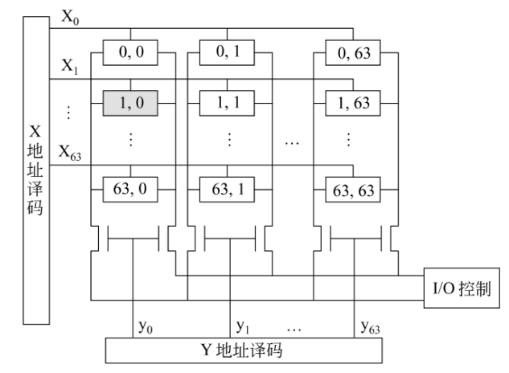
目前，动态存储芯片大多采用双译码结构。地址译码器分为 X 和 Y 方向两个译码器。如图，存储阵列有 4096 个单元，需要 12 根地址线：A₀～A₁₁，其中 A₀～A₅ 送至 X译码器，有 64 条译码输出线，各选择一行单元；A₆～A₁₁ 送至 Y 译码器，它也有 64 条译码输出线，分别控制一列单元的位线控制门。假如输入的 12 位地址为 A₁₁A₁₀…A₀ =000000000001 时，则 X 译码器的第 2 根译码输出线 (x₁) 为高电平，于是与它相连的 64 个存储单元的字选择 W 线为高电平。Y 译码器的第 1 根译码输出线 (y₀) 为高电平，打开第一列的位线控制门。在 X、Y 译码的联合作用下，存储矩阵中 (1,0) 单元被选中。
在选中的行和列交叉点上的单元只有一位，因此，采用二维双译码结构的存储器芯片被称为位片式芯片。有些芯片的存储阵列采用三维结构，用多个位平面构成存储阵列（及后面提到的位扩展），不同位平面在同一行和列交叉点上的多位构成一个存储字，被同时读出或写入。
若采用如图所示的双译码结构，存储器中译码器输出线的总数为行地址线数+列地址线数。
存储单元是存储器中的最小存储单位，也称为存储元，其作用是存储一 位二进制信息。作为存储单元电路，需具备以下基本功能。
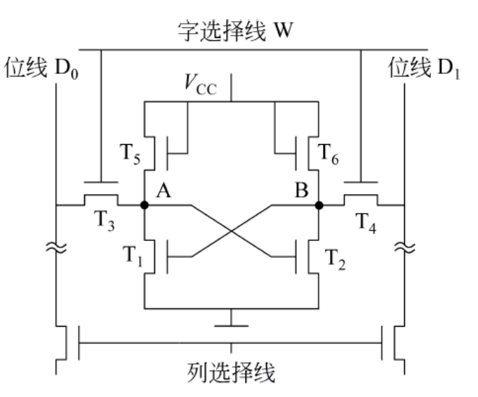
工作原理
优点
缺点
应用
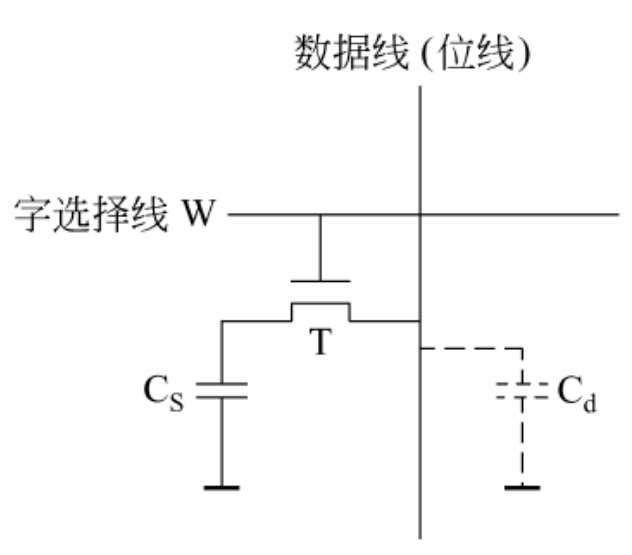
仅1个MOS管（T） + 1个电容（Cs） → 用电容Cs有无电荷表示 0/1
工作原理（比喻：带小孔的水杯）
优点
缺点
应用
核心区别对比表
特性 | 6管静态（SRAM） | 1管动态（DRAM） |
存储原理 | 双稳态触发器（电路自锁互保） | 电容器充放电（保存电荷） |
核心元件 | 6个MOS管 | 1个MOS管 + 电容 |
读出后是否需要重写 | 不需要（功耗管和工作管负责保持存储状态） | 需要（电容的电荷会泄露） |
是否需要刷新 | 不需要 | 必须定期刷新 |
读写速度 | 快（纳秒级） | 较慢（需充放电） |
集成度 | 低（面积大） | 高（面积小） |
成本 | 高 | 低 |
典型应用 | CPU 内部的高速缓存（L1/L2/L3 Cache） | 内存、显存 |
- 为什么叫"静态/动态"？
- 静态（Static）：状态稳定，不需外部干预维持
- 动态（Dynamic）：状态会衰减，需动态刷新维持
- "易失性"两者都有：断电后数据都会丢，只是 DRAM 连不断电都会丢（不刷新的话）
又称静态随机存取存储器(Static Random Access Memory)，它的每一个存储元都由六管静态 MOS 管存储元件（双稳态触发器）构成。下图为一个 SRAM 存储器的结构示意图
注意：SRAM 既可以采用一维译码，也可以采用下图中的三维结构
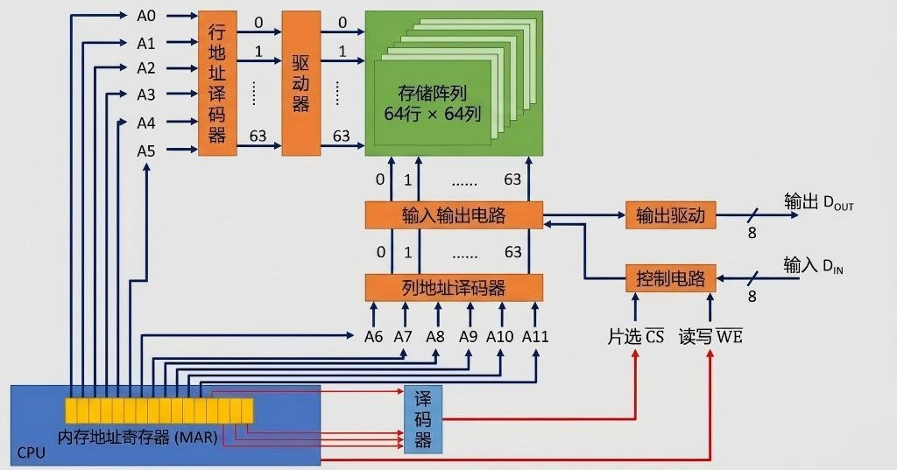
(1) 存储体（存储矩阵）。存储体是存储单元的集合。如图所示，4096 个存储单元被排成 64×64 的存储阵列，称为位平面，这样 8 个位平面构成 4096 字节的存储体。由 X 选择线（行选择线）和 Y 选择线（列选择线）来选择所需单元，不同位平面的相同行、列上的位同时被读出或写入。
(2) 地址译码器。用来将地址转换为译码输出线上的高电平，以便驱动相应的读写电路。这里采用三维结构，用多个位平面构成存储阵列，不同位平面在同一行和列交叉点上的多位构成一个存储字，被同时读出或写入（其实就是位扩展）。
(3) 驱动器：在双译码结构中，一条 X 方向的选择线要控制在其上的各个存储单元的字选择线，所以负载较大，因此需要在译码器输出后加驱动器。
(4) I/O 控制电路。用以控制被选中的单元的读出或写入，具有放大信息的作用。
(5) 片选控制信号。单个芯片容量太小，往往满足不了计算机对存储器容量的要求，因此需将一定数量的芯片按特定方式连接成一个完整的存储器。在访问某个字时，必须“选中”该字所在芯片，而其他芯片不被“选中”（即字扩展）。因而芯片上除了地址线和数据线外，还应有片选控制信号。在地址选择时，由芯片外的地址译码器的输入信号以及控制信号（如“访存控制”信号）来产生片选控制信号，选中要访问的存储字所在的芯片。
(6) 读/写控制信号。根据 CPU 给出的是读命令还是写命令，控制被选中的存储单元进行读或写。
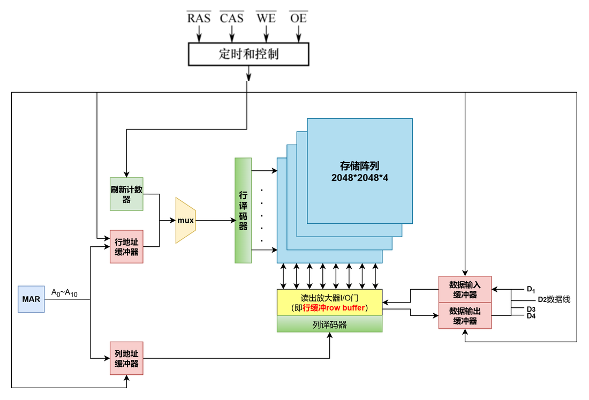
首先介绍一下图中的各组件
DRAM 的核心特性在于“破坏性读出”和“电容漏电”，这两个物理特性直接决定了它极其特殊的读操作和刷新机制。
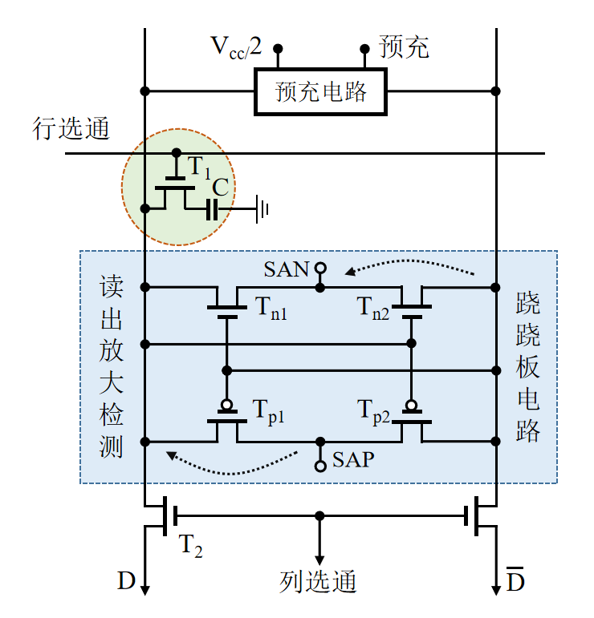
当 CPU 想要从 DRAM 读取数据时，芯片内部实际上经历了一个精密的 5 步动态过程。
1. 预充操作 ：准备阶段
2. 访问操作 ： 发挥作用（行激活）
 ）导通。此时，存储电容（存储着真实数据）和位线（寄生电容巨大）连通，发生电荷分配。
）导通。此时，存储电容（存储着真实数据）和位线（寄生电容巨大）连通，发生电荷分配。3. 信号检测 (Sense)：读出放大器登场（可以理解为将这一行数据读到行缓冲）
4. 数据恢复 (Restore)：内部的自动“回写”
5. 数据输出 (Output)： 发挥作用（列选择）
写入过程也有和读操作类似的前4步，所以写入过程也可以进行行刷新。 最后一步数据变成输入，将逻辑0，和1直接写入存储电容即可。
由于 DRAM 芯片容量较大，因此需要的地址位数也比较多，通过上面的读操作我们可以看出，DRAM 的行选通信号和列选通信号并不是同时给出的，因此可以行列地址复用，即行地址和列地址通过相同的引脚分两次先后输入，从而使得地址引脚数量减半。
根据上面 DRAM 芯片的读操作流程我们再对 DRAM 芯片的读写周期时序图进行解析


一、 读周期 (Read Cycle)
读周期的总时长记为 。在这个周期内，要完成“送行地址 送列地址 读出数据 内部破坏性恢复”的完整流程。
核心动作顺序：
二、 写周期 (Write Cycle)
写周期的总时长记为 。写周期的前半段（寻址部分）与读周期几乎一模一样，唯一的区别在于 信号的状态以及数据出现的时间。
核心动作顺序：
了解了完整的读取流程，理解刷新就变得非常简单了。
为什么需要刷新？
即使不去读它，DRAM 里的电容也会随着时间慢慢漏电。如果存的是“1”，漏电久了电压下降，再读的时候电路就会误判为“0”。因此必须定期“打气”。
刷新到底在干什么？
刷新，本质上就是执行了一次没有“第 5 步（数据输出）”的读操作。
正是因为第 4 步（数据恢复）的存在，DRAM 巧妙地利用了自身的读取机制，顺手完成了给电容补充电荷的续命任务。
重要考点：
- 行缓冲的作用，构成元件（非 DRAM，特定条件下等效于 SRAM），每个 DRAM 芯片都有一个行缓冲，因此需要会根据题目条件计算行缓冲的容量（注意问法）：
- 芯片中行缓冲的大小(指单个DRAM中的行缓冲大小)
- 内存条中行缓冲的大小(整个内存条全部行缓冲的大小)
行缓冲是由 SRAM 元件构成的这个说法其实不准确， 因为它和通用SRAM的设计目标不同。它的首要任务是能灵敏地感知和放大DRAM电容的微弱信号，其次才是锁存。而通用的SRAM芯片则专注于高速的读写和存储。这个放大器达到稳定的状态时，就和 SRAM 元件一样了，因此我们可以说该阵列通过其锁存功能 ，在功能上等效于一个高速SRAM缓存 。
行缓冲的物理实体是“读出放大器”。但因为读出放大器在完成信号放大后，利用了与 SRAM 极其相同的“交叉耦合正反馈”电路来锁存数据，使得它在保持打开状态时，具备了和 SRAM 一模一样的静态存储特性和极高的读取速度。
DRAM的发展主要围绕着提高数据传输效率和解决系统性能瓶颈展开。其发展历程从早期的异步DRAM演进到同步DRAM，主要经历了以下几个关键阶段：
早期的DRAM属于异步DRAM。
为了克服传统DRAM的效率瓶颈，后续出现了几种改进型的异步DRAM：
虽然 EDO 和 BEDO 拼命优化，但“没有时钟”的异步本质，让它们始终无法跟上 CPU 频率的发展速度。于是，内存界迎来了大一统的终极形态——SDRAM（Synchronous DRAM，同步动态随机存取存储器）。我们现在用的 DDR4、DDR5，全称都叫 DDR SDRAM，它们都是 SDRAM 的后代。
SDRAM 的革命性改变：
SDRAM 内部的工作方式寄存器(也称模式寄存器)可用来设置传送数据的长度以及从收到读命令(与CAS信号同时发出)到开始传送数据的延迟时间等，前者称为突发长度(burst lengths,BL),后者称为CAS时延(CAS latency,CL)。根据所设定的 BL和CL,CPU可以确定何时开始从总线上取数以及连续取多少个数据。在第一个数据读出后，同一行的所有数据都被送到行缓冲器中，因此，以后每个时钟可从 SDRAM读取一个数据，并在下一个时钟内通过总线传送到CPU。
DDR 技术的出现，本质上是为了解决一个极其现实的物理瓶颈：DRAM 芯片内部存储阵列的物理充放电速度（核心频率）已经很难再大幅提升了。 为了满足 CPU 的数据吞吐需求，工程师们玩了一个非常聪明的“障眼法”——内部宽车道并行，外部窄车道狂奔。
既然内部核心阵列跑不快（比如只能跑 200MHz），怎么让外部接口跑出 800MHz 甚至 3200MHz 的速度呢？靠的就是预取（Prefetch）加上芯片内部的 I/O 缓冲（I/O Buffer）。
3. DDR 家族的演进：预取位数的翻倍
DDR 每一代的升级，核心都在于预取位数的翻倍。我们可以以内部核心频率恒定为 200MHz 为例(前提： 数据位宽 w = 8 字节)，来看看各代的差别：
内存代数 | 预取机制 (Prefetch) | 内部核心频率 | 外部总线频率 | 等效传输率 (数据频率) | 最大带宽 (64位宽) |
DDR | 2位 (2n) | 200MHz | 200MHz | 400 MT/s | 3.2 GB/s |
DDR2 | 4位 (4n) | 200MHz | 400MHz | 800 MT/s | 6.4 GB/s |
DDR3 | 8位 (8n) | 200MHz | 800MHz | 1600 MT/s | 12.8 GB/s |
DDR4 | 16位 (16n) | 200MHz | 1600MHz | 3200 MT/s | 25.6 GB/s |
仔细看表格最右侧和最左侧，无论外面的 DDR4-3200 标称得多吓人，它内部那颗老旧的存储核心，依然在以 200MHz 的慢速慢条斯理地工作着。 速度的狂飙，全靠内部一次性吞吐 16 倍的数据量（16n 预取）和外部总线频率的拉升来实现。
A. 该 DDR4 芯片内部采用了 16 位（16n）数据预取技术
B. 存储器总线每个时钟周期可传送两次数据，其总线时钟频率为 1600MHz
C. 存储器总线上的等效数据传输率为 6400 MT/s（兆次/秒）
D. 该存储器总线的最大理论带宽为 25.6 GB/s
答案：C
内部核心频率 × 预取倍数，即 次/秒（3200 MT/s）。选项 C 宣称是 6400，故 C 错误。等效传输率 / 2，即 。B 正确。等效传输率 × 数据位宽，即 。D 正确。A. 该内存条存储器总线上的等效数据传输率（传送次数）为 800M 次/秒
B. 芯片内部存储阵列的实际工作频率（核心频率）为 400MHz
C. 存储器总线的实际时钟频率为 400MHz
D. 芯片内部 I/O 缓冲采用了 4 位（4n）数据预取技术
答案：B
带宽 = 等效传输率 × 数据位宽，可反推出等效传输率 = 次/秒。A 正确。等效传输率 = 核心频率 × 预取倍数，可反推出核心频率 = 。选项 B 宣称是 400MHz，故 B 错误。等效传输率 / 2，即 。C 正确。
DRAM 的刷新机制是妥协于其物理特性的产物（电容漏电），为了保证数据不丢失，必须在规定的时间（最大刷新周期，通常为 2ms）内，把所有的存储单元重新读写一遍。
一、 刷新的基本特性与规则
二、 三种刷新方式对比
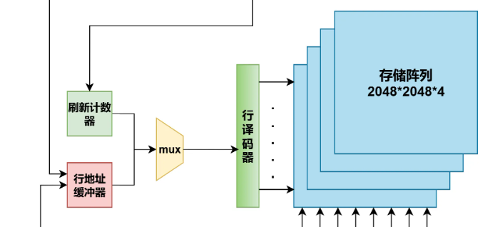
结合这个图可以看出，DRAM 在执行刷新操作时不能响应 CPU 的读写请求，因此CPU 正常读写与内存必须刷新之间 存在“内存争用”问题，为解决该问题，共有三种经典的策略：（结合下面的例子进行讲解）
假设 DRAM 芯片为 128 行 ×128 列结构，存储器的读写周期 ＝ 0.5μs，刷新间隔为 2ms
因此 2ms 内应完成所有 128 行的刷新，刷新一行所花费的时间等于＝ 0.5μs，可将这 2ms 划分为 4000 个 0.5μs 的时隙，在这些时隙中选出 128 个时隙，每个时隙刷新一行即可完成该 DRAM 的刷新任务。
1. 集中刷新方式
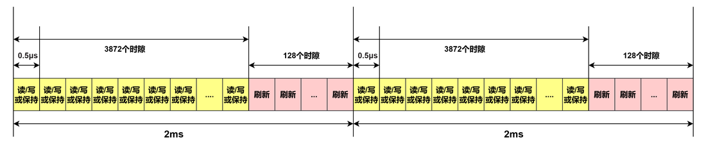
2. 分散刷新方式
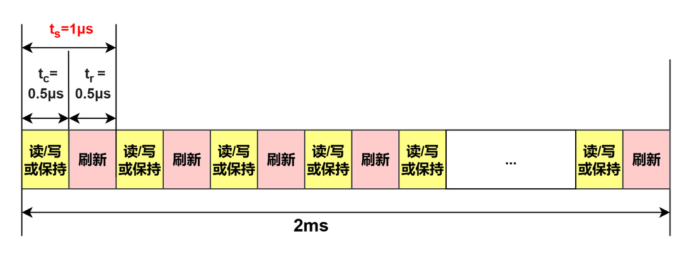
3. 异步刷新方式
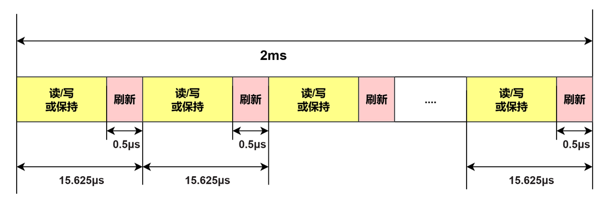
当刷新和访存同时出现时，先执行哪一个？
若刷新到来的同时，CPU想要访问主存，则优先刷新，在经过一个存储周期后，CPU在进行访存。
因此，在DRAM刷新期间，CPU是无法对DRAM进行读/写操作。这段时间称为死时间。集中刷新将死时间集中 在一起，异步刷新将死时间平均在一个刷新周期中。分散刷新由于延长了存储周期，不存在死时间。
注意：每次刷新执行，其实就是进行一次读操作，也就是读出DRAM中一行的电荷，然后在对电荷进行再生。
所以本质上刷新操作就是一次主存读操作，也就解释了为什么刷新执行时，CPU不能访问主存。